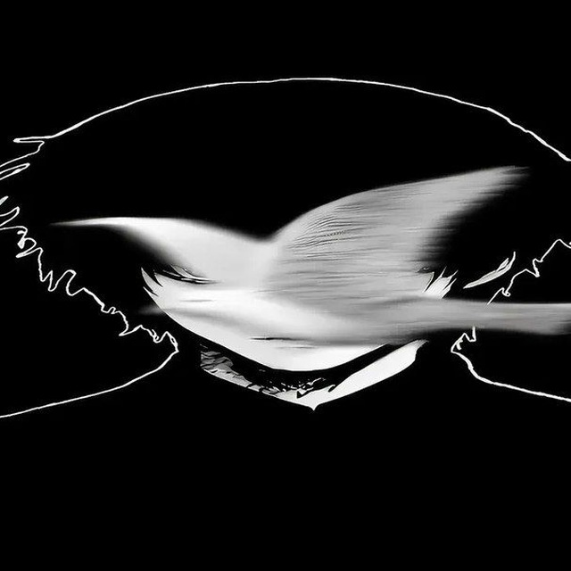

Установка в пару шагов
Добавляй файлы кнопкой или перетаскивай их в окно. Приложение распознаёт поддерживаемые пакеты и устанавливает их в выбранную папку игры.
DRAG · DROP · INSTALLУстанавливай дополнения и миры в Minecraft Bedrock проще. Добавь файлы, выбери папку игры — остальное приложение сделает за тебя.
Небольшой инструмент для повседневной работы с Minecraft Bedrock на Windows — всё важное собрано в одном окне.
Добавляй файлы кнопкой или перетаскивай их в окно. Приложение распознаёт поддерживаемые пакеты и устанавливает их в выбранную папку игры.
DRAG · DROP · INSTALLПросматривай ресурспаки, паки поведения и скинпаки, проверяй их версии и открывай расположение в Проводнике. Ненужное можно удалить.
VIEW · ORGANIZEИмпортируй миры из .mcworld и сохраняй свои миры обратно в этот формат, чтобы перенести или отправить их.
WORLDS · .MCWORLDПроверь манифесты пакетов перед установкой и создай ZIP-копию установленных паков.
CHECK · BACK UPУстановщик добавит приложение в меню «Пуск». При первом запуске Bedrock Addon Installer попробует найти папку Minecraft автоматически.
Скачать установщикЗапусти Setup и пройди обычные шаги мастера установки.
Выбери .mcaddon, .mcpack, .zip, .mcworld или папку с паком. Можно добавить сразу несколько.
Если игра не найдена автоматически, укажи папку com.mojang вручную, затем нажми «Загрузить».
Импортируй готовый мир в Minecraft Bedrock, а свои сохранения экспортируй в .mcworld — для переноса или резервной копии.
Не нашёл ответ? Напиши автору приложения через площадку, где ты его скачал.
Bedrock Addon Installer помогает управлять файлами Minecraft Bedrock на Windows. Совместимость конкретного аддона зависит от его автора и версии самой игры.
.mcaddon, .mcpack, .zip, .mcworld и папки с паком. Миры можно также импортировать из .mctemplate.
На вкладке установки нажми «Выбрать папку» и укажи нужную папку com.mojang вручную. Можно открыть её прямо из приложения.
Проверь настройки мира: ресурспаки и паки поведения часто нужно включить отдельно. Некоторым аддонам требуются экспериментальные функции. Если Minecraft был открыт во время установки, перезапусти его.
Нет. Скачай установщик для Windows — он устанавливает готовое приложение. Python нужен только для запуска исходного кода или самостоятельной сборки.
Да. Открой раздел «Установленные», отметь нужные паки и нажми «Удалить выбранные». Это действие нельзя отменить.

Сделал Bedrock Addon Installer, чтобы установка и организация дополнений Minecraft Bedrock занимали меньше времени. Спасибо, что пользуешься приложением.
Скачай Bedrock Addon Installer и держи аддоны, паки и миры под рукой.
Скачать для Windows